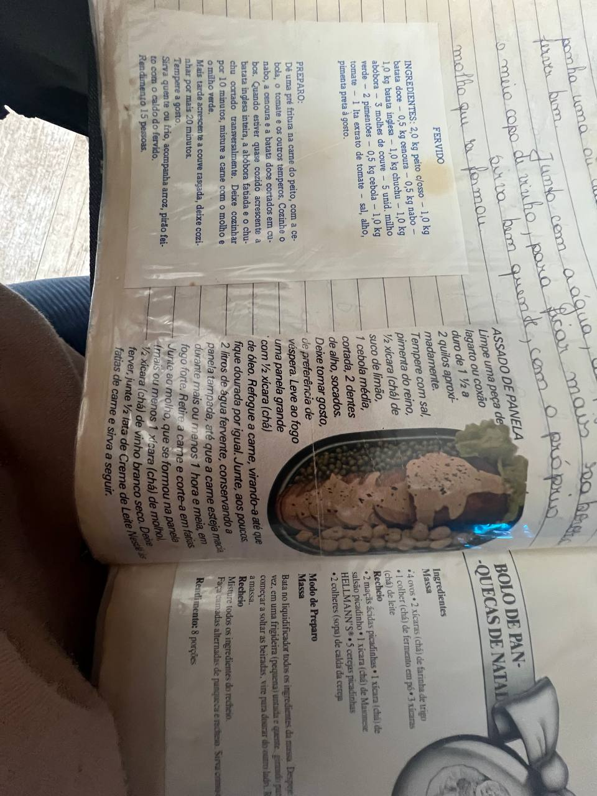

Carnes
Assado de panela
Ingredientes
- 1 peça de lagarto ou coxão duro (1,5 a 2 kg), limpa
- Sal e pimenta-do-reino a gosto
- Suco de limão a gosto
- 1 cebola média picada
- 2 dentes de alho socados
- ½ xícara (chá) de óleo
- Cerca de 2 litros de água fervente
- ½ xícara (chá) de vinho branco seco
- ½ lata de creme de leite Nestlé
Modo de preparo
- Tempere a carne com sal, pimenta-do-reino, suco de limão, cebola e alho. Deixe tomar gosto, de preferência de um dia para o outro.
- Em panela grande, aqueça o óleo e doure a carne de todos os lados.
- Vá juntando a água fervente aos poucos, mantendo a panela tampada, até a carne ficar macia (cerca de 1 h 30 min em fogo médio-alto). Para o molho ficar mais saboroso, acrescente o vinho junto com a água durante o cozimento.
- Retire a carne e corte em fatias. No molho que ficou na panela, junte um pouco do caldo do cozimento se precisar, ferva e acrescente o creme de leite. Espalhe sobre as fatias e sirva em seguida.
Observação: o recorte menciona “1 xícara de molho” após fatiar; interpretamos como o próprio caldo do assado + vinho, conforme as anotações manuscritas na mesma página.
Foto da receita
